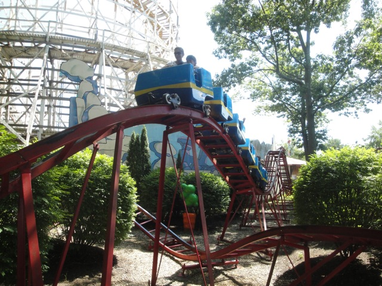
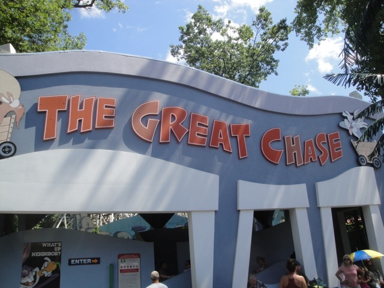

| |
Great Chase Review

We're here at Six Flags New England. For credit whoring, there's the Great Chase. After you barley squeeze in the cars, you climb up the lift hill. Then you head down the curving first drop. It's a really nice first drop (For a kiddy coaster). Then you go over the first hill. We head up a small hill, down a tiny curved drop. Then you go into a kiddy turnaround. Followed by some bunny hops and that's the ride. I'd really only recommend riding for the credit, and that's only if you're a major credit whore.
2/10
Location: Six Flags New England
Opened: 1996
Built by: Miler Coasters
Last Ridden: July 30, 2011
I have ridden this exact same ride at the following parks.
Elitch Gardens
Great Chase Photos

Home
|